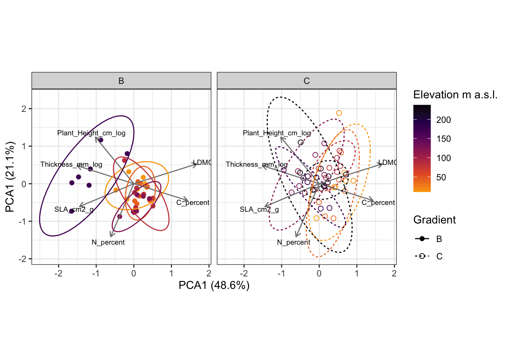

community <- read_csv("data/PFTC4_Svalbard_2018_Community_Gradient.csv")
raw_traits <- read_csv("data/PFTC4_Svalbard_2018_Gradient_Traits.csv")8 Plant functional trait data
For this tutorial we will use the follwoing packages: tidyverse, vegan, ggvegan and broom, traitstrap, patchwork and glue.
8.1 The data and import
We will use the data from PFTC4 from Svalbard. For more information about the data see Chapter 6 for more information.
We will need to import the trait and community data.
#> Rows: 698 Columns: 12
#> ── Column specification ────────────────────────────────────────────────────────
#> Delimiter: ","
#> chr (4): Gradient, PlotID, Taxon, Weather
#> dbl (7): Year, Site, Cover, Fertile, Elevation_m, Longitude_E, Latitude_N
#> date (1): Date
#>
#> ℹ Use `spec()` to retrieve the full column specification for this data.
#> ℹ Specify the column types or set `show_col_types = FALSE` to quiet this message.
#> Rows: 11345 Columns: 15
#> ── Column specification ────────────────────────────────────────────────────────
#> Delimiter: ","
#> chr (7): Project, Gradient, PlotID, ID, Functional_group, Taxon, Trait
#> dbl (7): Year, Site, Individual_nr, Value, Elevation_m, Latitude_N, Longitu...
#> date (1): Date
#>
#> ℹ Use `spec()` to retrieve the full column specification for this data.
#> ℹ Specify the column types or set `show_col_types = FALSE` to quiet this message.The dataset has 11345 rows and 15 columns and a number of numeric, character and date variables. It contains measurements of 14 traits from two elevational gradients on Svalbard. The traits were measured on individual plants from 21 different graminoid and forb species. For more information about the sites, traits and measurements see here.
8.2 Prepare data
For the trait data we need to do some preparation. We want to log transform all the size traits and rename them. And we want to order the traits, for later when visualising. Note that some traits where removed.
traits <- raw_traits |>
mutate(Value_log = if_else(Trait %in% c(
"Plant_Height_cm",
"Leaf_Thickness_mm"), log(Value), Value),
Trait = recode(Trait,
"Plant_Height_cm" = "Plant_Height_cm_log",
"Leaf_Thickness_mm" = "Thickness_mm_log")) |>
# order traits
mutate(Trait = factor(Trait, levels = c("Plant_Height_cm_log", "Thickness_mm_log", "LDMC", "SLA_cm2_g", "C_percent", "N_percent")))8.3 Bootstrapping
Then we do the bootstrapping, see ?sec-bootstrap for details.
trait_imp <- trait_fill(comm = community,
traits = traits,
scale_hierarchy = c("Gradient", "Site", "Elevation_m", "PlotID"),
global = F,
taxon_col = "Taxon",
trait_col = "Trait",
value_col = "Value",
abundance_col = "Cover",
min_n_in_sample = 2)
CWM <- trait_np_bootstrap(trait_imp, nrep = 100, sample_size = 200)
CWM_moments <- trait_summarise_boot_moments(CWM)
CWM_moments
#> # A tibble: 486 × 18
#> # Groups: Gradient, Site, Elevation_m, PlotID [81]
#> Gradient Site Elevation_m PlotID Trait n mean ci_low_mean
#> <chr> <dbl> <dbl> <chr> <fct> <int> <dbl> <dbl>
#> 1 B 1 11.1 F Plant_Height_cm_… 100 3.86 3.65
#> 2 B 1 11.1 F Thickness_mm_log 100 0.244 0.240
#> 3 B 1 11.1 F LDMC 100 0.309 0.304
#> 4 B 1 11.1 F SLA_cm2_g 100 146. 143.
#> 5 B 1 11.1 F C_percent 100 44.3 44.1
#> 6 B 1 11.1 F N_percent 100 3.22 3.18
#> 7 B 1 11.1 B Plant_Height_cm_… 100 3.73 3.55
#> 8 B 1 11.1 B Thickness_mm_log 100 0.243 0.240
#> 9 B 1 11.1 B LDMC 100 0.285 0.282
#> 10 B 1 11.1 B SLA_cm2_g 100 175. 174.
#> # ℹ 476 more rows
#> # ℹ 10 more variables: ci_high_mean <dbl>, var <dbl>, ci_low_var <dbl>,
#> # ci_high_var <dbl>, skew <dbl>, ci_low_skew <dbl>, ci_high_skew <dbl>,
#> # kurt <dbl>, ci_low_kurt <dbl>, ci_high_kurt <dbl>8.4 Trait values along elevation
Let’s plot the boostraped mean trait values for each gradient (nutrient and control).
CWM_moments |>
ggplot(aes(x = Elevation_m, y = mean, colour = Gradient, fill = Gradient)) +
geom_point() +
geom_smooth(method = "lm") +
scale_colour_manual(values = c("green4", "grey"),
labels = c("Nutrients", "Control")) +
scale_fill_manual(values = c("green4", "grey"),
labels = c("Nutrients", "Control")) +
facet_wrap(~ Trait, scales = "free") +
theme_bw()
#> `geom_smooth()` using formula = 'y ~ x'
There are some differences in traits along the two gradients, with taller, thicker leaves and higher N values at the bird cliff gradient (nutrient input by sea birds).
Let’s test if this is the case.
trait_result <- CWM_moments |>
dplyr::mutate(Gradient = factor(Gradient, levels = c("C", "B"))) |>
dplyr::group_by(Trait) |>
nest(data = -c(Trait)) |>
dplyr::mutate(model = map(data, ~lm(mean ~ Elevation_m * Gradient, data = .x)),
result = map(model, tidy)) |>
unnest(result)
trait_result |>
select(Trait, term:p.value) |>
kbl(digits = 2)| Trait | term | estimate | std.error | statistic | p.value |
|---|---|---|---|---|---|
| Plant_Height_cm_log | (Intercept) | 2.71 | 0.48 | 5.69 | 0.00 |
| Plant_Height_cm_log | Elevation_m | 0.00 | 0.00 | 1.29 | 0.20 |
| Plant_Height_cm_log | GradientB | -1.03 | 0.74 | -1.40 | 0.17 |
| Plant_Height_cm_log | Elevation_m:GradientB | 0.02 | 0.01 | 2.77 | 0.01 |
| Thickness_mm_log | (Intercept) | 0.23 | 0.01 | 17.82 | 0.00 |
| Thickness_mm_log | Elevation_m | 0.00 | 0.00 | 1.31 | 0.19 |
| Thickness_mm_log | GradientB | -0.04 | 0.02 | -1.89 | 0.06 |
| Thickness_mm_log | Elevation_m:GradientB | 0.00 | 0.00 | 3.06 | 0.00 |
| LDMC | (Intercept) | 0.32 | 0.01 | 24.79 | 0.00 |
| LDMC | Elevation_m | 0.00 | 0.00 | -3.70 | 0.00 |
| LDMC | GradientB | 0.00 | 0.02 | 0.20 | 0.84 |
| LDMC | Elevation_m:GradientB | 0.00 | 0.00 | -2.44 | 0.02 |
| SLA_cm2_g | (Intercept) | 149.52 | 6.12 | 24.43 | 0.00 |
| SLA_cm2_g | Elevation_m | 0.15 | 0.04 | 3.69 | 0.00 |
| SLA_cm2_g | GradientB | 0.65 | 9.45 | 0.07 | 0.95 |
| SLA_cm2_g | Elevation_m:GradientB | 0.28 | 0.08 | 3.38 | 0.00 |
| C_percent | (Intercept) | 46.59 | 0.52 | 90.08 | 0.00 |
| C_percent | Elevation_m | -0.01 | 0.00 | -3.06 | 0.00 |
| C_percent | GradientB | -1.32 | 0.80 | -1.65 | 0.10 |
| C_percent | Elevation_m:GradientB | 0.00 | 0.01 | 0.52 | 0.60 |
| N_percent | (Intercept) | 2.58 | 0.09 | 28.24 | 0.00 |
| N_percent | Elevation_m | 0.00 | 0.00 | -0.54 | 0.59 |
| N_percent | GradientB | 0.28 | 0.14 | 1.98 | 0.05 |
| N_percent | Elevation_m:GradientB | 0.00 | 0.00 | 0.33 | 0.74 |
Plant height and leaf thickness increase with elevation, but only in the bird cliff. LDMC decreases with elevation, but more along the bird cliff gradient. SLA increases with elevation and also more along the bird cliff. Leaf carbon decreases with elevation but does not differ between the gradients. And finally, leaf nitrogen does not change with elevation, but is higher at the bird cliff.
8.5 Trait ordination (PCA)
We can also look at the traits in a multivariate space, for example by doing a principle component analysis (PCA).
# make wide trait table
cwm_fat <- CWM_moments %>%
group_by(Site) %>%
mutate(Mean_elevation = mean(Elevation_m),
GS = paste0(Gradient, Site)) %>%
select(Gradient:mean, Mean_elevation, GS) %>%
pivot_wider(names_from = "Trait", values_from = "mean") %>%
ungroup()
pca_output <- cwm_fat %>%
select(-(Gradient:GS)) %>%
rda(scale = TRUE)
pca_sites <- bind_cols(
cwm_fat %>%
select(Gradient:GS),
fortify(pca_output, display = "sites")
)
pca_traits <- fortify(pca_output, display = "species") %>%
mutate(Trait = label)
# get eigenvalues
e_B <- eigenvals(pca_output)/sum(eigenvals(pca_output))
pca_sites |>
ggplot(aes(x = PC1, y = PC2,
colour = Mean_elevation, linetype = Gradient, shape = Gradient, group = GS)) +
geom_point(size = 2) +
geom_segment(data = pca_traits,
aes(x = 0, y = 0, xend = PC1, yend = PC2),
arrow = arrow(length = unit(0.2, "cm")),
colour = "grey50",
inherit.aes = FALSE) +
geom_text(data = pca_traits,
aes(x = PC1 * 1.1,y = PC2 * 1.1, label = Trait),
size = 2.5,
inherit.aes = FALSE, colour = "black") +
coord_equal() +
stat_ellipse(aes(colour = Mean_elevation)) +
scale_colour_viridis_c(end = 0.8, option = "inferno", direction = -1, name = "Elevation m a.s.l.") +
scale_shape_manual(values = c(16, 1)) +
labs(x = glue("PCA1 ({round(e_B[1] * 100, 1)}%)"),
y = glue("PCA1 ({round(e_B[2] * 100, 1)}%)")) +
facet_grid(~ Gradient) +
theme_bw()